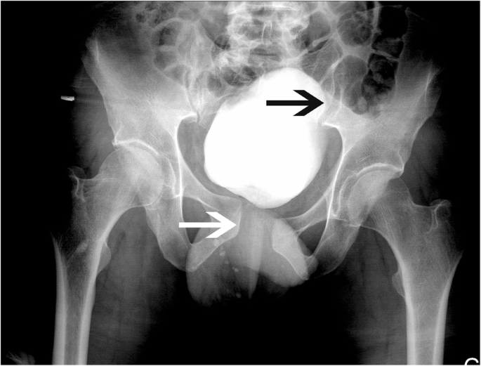

先看哪里Where to look
- 白箭标示耻骨联合分离，黑箭标示左骶髂关节异常。作者病例提示束带可能掩盖损伤。The white arrow marks symphyseal separation; the black arrow marks left SI disruption. The published case illustrates masking by a binder.
不是本课合成病例；不能证明活动性出血。不能据此制定所有患者的束带移除流程。Not the lesson’s synthetic case; it does not establish active bleeding or a universal binder-removal protocol.
原始图注与许可Original caption and licence
Jamme S, Poletti A, Gamulin A, Rutschmann O, Andereggen E, Grosgurin O, Marti C · CC BY 4.0 · Original source / 原图出处
Pelvic anteroposterior plain film after binder removal showing pubic symphysis diastasis (white arrow) and left sacroiliac disruption (black arrow)
Figure 5 — Jamme S et al. False negative computed tomography scan due to pelvic binder in a patient with pelvic disruption: a case report and review of the literature. J Med Case Rep. 2018;12:271. DOI: 10.1186/s13256-018-1808-7 · Figure 5 — Jamme S et al. False negative computed tomography scan due to pelvic binder in a patient with pelvic disruption: a case report and review of the literature. J Med Case Rep. 2018;12:271. DOI: 10.1186/s13256-018-1808-7
保留原图；网页仅按比例显示。读图释义由课程另写，不是原作者诊疗结论。Original image retained and displayed proportionally. Teaching interpretation is separate from the original clinical conclusions.